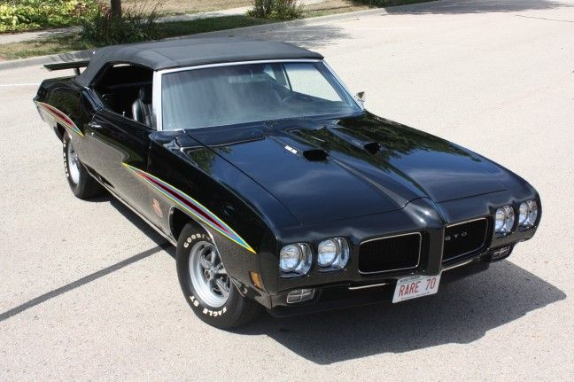
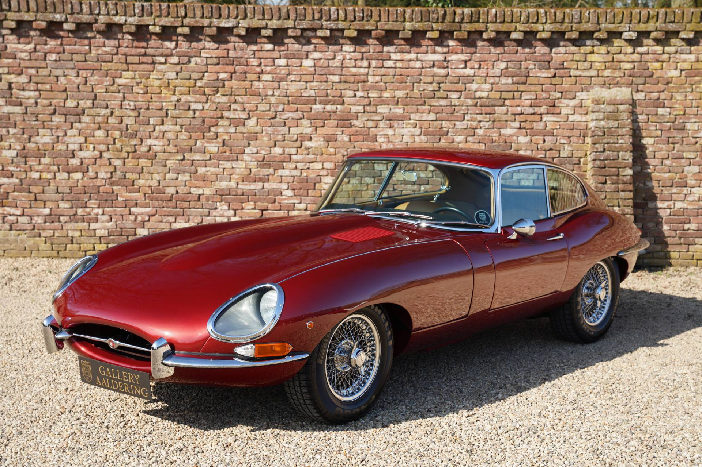

Modelos de Coches Clásicos
Descubre algunos de los modelos más emblemáticos que han marcado la historia del automóvil.
Clásicos Americanos

¡Adéntrate en el emocionante mundo de los coches clásicos americanos! Desde la potencia descomunal de los muscle cars hasta la elegancia atemporal de los descapotables de los años dorados, los coches clásicos americanos han cautivado los corazones de los aficionados al motor en todo el mundo.
Clásicos Europeos

Bienvenidos al apasionante mundo de los coches clásicos europeos, dondela elegancia se fusiona con la ingeniería de precisión. Desde los elegantes roadsters británicos hasta los deportivos italianos de pura sangre, los coches clásicos europeos representan la cúspide del diseño automotriz y la artesanía.
Clásicos Asiaticos

¡Explora el mundo intrigante de los coches clásicos asiáticos! Desde los icónicos sedanes japoneses hasta los compactos ágiles y eficientes, los coches clásicos asiáticos ofrecen una fascinante mezcla de ingeniería innovadora y diseño distintivo.